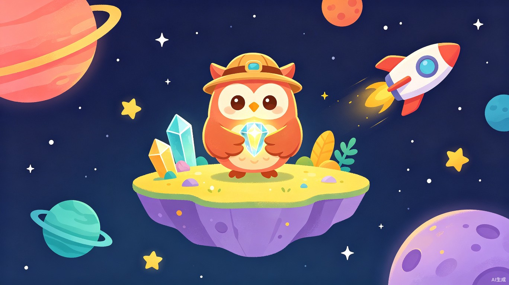
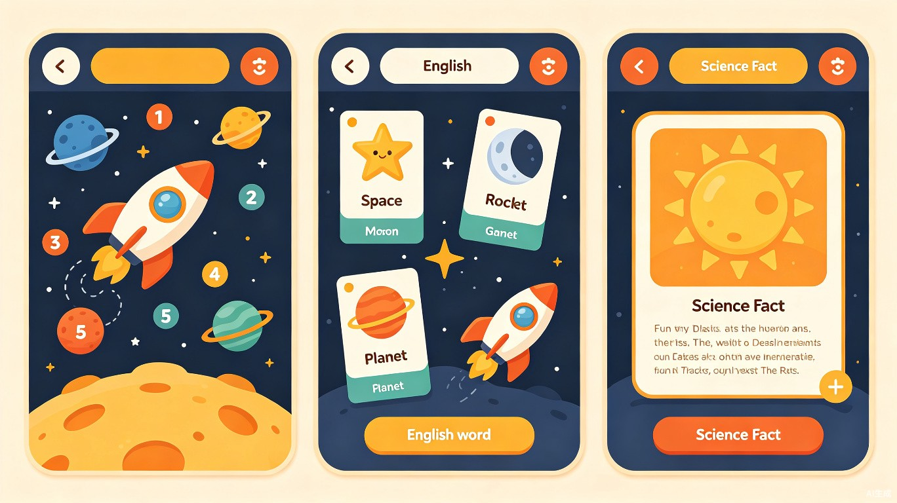
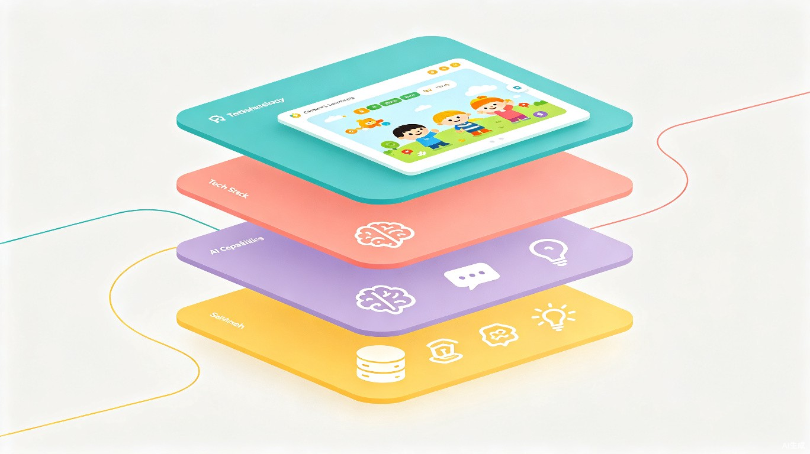

奇知岛 Wonder Island
面向小学1-3年级的 AI 驱动跨学科主题探险学习平台
TRAE AI 创造力大赛 · 学习工作赛道 · 产品规划方案 V21产品定位与核心差异化
一句话定位
以故事剧情驱动的跨学科主题探险学习平台，AI陪伴孩子在奇妙的主题世界中自然融合数学、英语和科学知识的学习。
三大核心差异化
市面上产品按学科分模块（数学一块、英语一块），我们以主题故事为载体，在每个主题中自然融合数学、英语、科学通识。一个故事，三科同修。
三大AI能力（内容生成、苏格拉底辅导、语音陪伴）深度嵌入故事体验的每个环节，而非外挂功能。AI是探险伙伴，不是工具箱。
每个学习部分结束后设置1-2道AI引导的开放式思考题，不只是答题，更是培养孩子的逻辑推理和批判性思维。
目标用户画像
2故事主题设计：星空探险记
MVP主题选择理由
选择天文科学作为首个主题，基于以下考量：
- 市场空白：目前市面上几乎没有面向小学低年级的天文科学游戏化学习产品
- 天然跨学科：天文主题可以自然融入数学（计算距离/数量）、英语（太空术语）、科学（行星知识）
- 高吸引力：太空、星星、火箭对孩子具有天然的想象力和好奇心驱动力
- 视觉表现力强：星空、行星、宇宙场景的图片和动画效果丰富，符合"多注重图片和故事表达"的需求
- 可扩展：后续可延展为"植物王国"、"动物世界"、"海底探险"等系列主题
故事主线
在遥远的宇宙深处，有一颗名叫"奇知星"的星球。这颗星球上的"知识水晶"为整个星系提供光芒。一天，一阵宇宙风暴击碎了知识水晶，碎片散落在太阳系的各个角落。
一只名叫"知知"的智慧猫头鹰（AI语音角色）带着一封魔法信来到地球，邀请孩子化身为"小星空探险家"，乘坐"好奇号"飞船穿越太阳系，通过完成知识挑战收集水晶碎片，恢复奇知星的光芒。
三幕结构总览
收到魔法信
地球的夜空
月球与太阳
行星探险
水晶合一
3关卡详细设计
每个关卡包含5个环节：故事导入（图文+语音）→ 数学任务站 → 英语任务站 → 科学任务站 → 思考题挑战。每天学习时长：数学约1小时，英语和科学各约30分钟。
第一幕：地球的夜空 —— "星星的秘密"
知知猫头鹰带着孩子来到一个宁静的夜晚，抬头看到满天繁星。"你知道吗？天上那些一闪一闪的星星，每一颗都有自己的名字和故事呢！今天我们就来认识它们，帮它们找回丢失的水晶碎片吧！"
[配图：深蓝色夜空下，卡通风格的小探险家和猫头鹰仰望星空，远处有流星划过]
数学任务站：数星星（4个小游戏，约60分钟）
| 游戏名称 | 游戏形式 | 知识内容 | 时长 |
|---|---|---|---|
| 星星数一数 | 点击计数：夜空中出现一群群星星，孩子点击每颗星星并计数，从10以内到20以内逐步提升 | 1-20以内的数数、认数 | 10分钟 |
| 星座连线 | 拖拽连线：按照数字顺序将星星连成星座图案（如北斗七星），连对后出现星座图案和名称 | 数字顺序、图形认知 | 15分钟 |
| 流星加减法 | 弹射游戏：天空中出现算式"7+5=?"，孩子选择正确答案的流星发射出去，击中目标后流星绽放成烟花 | 20以内进位加法 | 15分钟 |
| 银河分组 | 分类游戏：将银河中混在一起的亮星和暗星分别拖入两个篮子，然后比较两组数量谁多谁少 | 分类计数、数量比较 | 20分钟 |
英语任务站：星空英语（3个小游戏，约30分钟）
| 游戏名称 | 游戏形式 | 知识内容 | 时长 |
|---|---|---|---|
| 星空单词卡 | 翻牌配对：卡片背面朝上，翻开两张找到英文和中文的配对（star-星星，moon-月亮，sky-天空，night-夜晚） | 8个太空主题基础单词 | 10分钟 |
| 知知读一读 | 语音跟读：知知朗读单词和简单句子（"I see a star."），孩子跟读，系统给予反馈 | 单词发音、简单句型 | 10分钟 |
| 星星拼写赛 | 拖拽拼字：字母散落在星星上，孩子按正确顺序拖入位置拼出单词，拼对后星星发光 | 单词拼写、字母顺序 | 10分钟 |
科学任务站：认识星空（2个小游戏，约30分钟）
| 游戏名称 | 游戏形式 | 知识内容 | 时长 |
|---|---|---|---|
| 星星是什么 | 互动绘本：图文翻页式科普，配有AI语音朗读。介绍"太阳是一颗恒星"、"星星为什么会发光"、"白天星星去哪了"等知识 | 恒星概念、白天黑夜成因 | 15分钟 |
| 星座小侦探 | 观察匹配：给出星座图案和名称（北斗七星、猎户座、天蝎座），孩子在夜空中找到对应的星座并点击确认 | 常见星座认知 | 15分钟 |
思考题挑战（AI苏格拉底式引导）
如果太阳是一颗星星，那为什么白天我们看不到其他星星呢？你能猜猜原因吗？
AI 引导 如果孩子答不出，知知会说："想一想，太阳和星星，谁离我们更近？谁更亮呢？白天的时候，什么东西把整个天空都照亮了？"
你能在天空中找到自己最喜欢的"星星图案"吗？试着用你的想象力给它起个名字！
AI 生成 AI会根据孩子描述的名字，生成一段专属的小故事。
第二幕：月球与太阳 —— "邻居星球"
飞船飞越大气层，知知指着天空中一轮明亮的月亮说："看！那是我们的邻居——月球！月球是地球唯一的天然卫星哦，它就像地球的小跟班，一直在绕着地球转。" [配图：飞船飞过地球和月球，月球表面有环形山的细节插画]
数学任务站（4个小游戏，约60分钟）
| 游戏名称 | 游戏形式 | 知识内容 | 时长 |
|---|---|---|---|
| 环形山计数 | 点击标记：月球表面布满环形山，孩子逐一点击并计数，然后用"减法"算出还有多少没标记 | 20以内减法 | 15分钟 |
| 月球 phases | 排序拼图：将月相图片按正确顺序排列（新月→满月），完成拼图后月亮发光 | 排序逻辑、规律认知 | 15分钟 |
| 太阳家族 | 分配游戏：太阳系有八大行星，按距离太阳远近排序，同时计算"水星离太阳最近，海王星最远，它们之间隔了几颗行星？" | 序数、简单减法 | 15分钟 |
| 太空补给站 | 购物计算：飞船需要补充燃料，每个星球价格不同，计算购买多颗星球燃料的总花费 | 100以内加减法 | 15分钟 |
英语任务站（3个小游戏，约30分钟）
| 游戏名称 | 游戏形式 | 知识内容 | 时长 |
|---|---|---|---|
| 星球连连看 | 英文-图片匹配：将 planet/太阳、moon/月亮、earth/地球、sun/太阳 拖线连接对应图片 | 天体英文词汇 | 10分钟 |
| 太空歌谣 | 歌词填空：一首简单的英文太空歌谣播放，孩子在歌词中填入正确的英文单词 | 单词听辨、简单句型 | 10分钟 |
| 外星对话 | 角色扮演：知知和一个"外星小朋友"用简单英语打招呼，孩子选择正确的回应（Hi! / Hello! / Good morning!） | 日常问候用语 | 10分钟 |
科学任务站（2个小游戏，约30分钟）
| 游戏名称 | 游戏形式 | 知识内容 | 时长 |
|---|---|---|---|
| 月球百科 | 互动绘本+动画：图文并茂地展示"月球表面有什么"、"人为什么要登月"、"月球上能听到声音吗"等趣味知识 | 月球基本特征、太空环境 | 15分钟 |
| 八大行星排排队 | 拖拽排序+科普弹窗：将八大行星拖到正确的轨道位置，每放对一颗会弹出该行星的趣味科普（如"木星上可以放下1000个地球！"） | 太阳系结构、行星特征 | 15分钟 |
思考题挑战
如果你站在月球上，你觉得地球看起来会是什么样子？和我们在地球上看月亮一样吗？
AI 引导 "你在地球上看月亮，月亮有多大？如果你在月球上看地球，地球会比月亮大还是小呢？为什么？"
太阳每天都从东方升起、西方落下。可是太阳并没有真的"动"——那到底是什么在动呢？
AI 引导 "想象你站在一个旋转的木马上，木马在转的时候，你会觉得周围的东西怎么样？"
第三幕：行星探险 —— "太阳系大冒险"
飞船深入太阳系，来到了红色的火星和巨大的木星之间。知知兴奋地说："每个行星都好不一样！有的特别热，有的特别冷；有的全是气体，有的有坚硬的地面。来，我们选几颗最有趣的行星去探险吧！" [配图：飞船穿梭在色彩斑斓的行星之间，背景有土星环和小行星带]
数学任务站（4个小游戏，约60分钟）
| 游戏名称 | 游戏形式 | 知识内容 | 时长 |
|---|---|---|---|
| 行星距离赛 | 赛车游戏：选择一个行星角色参加太空赛跑，通过回答"谁离太阳更远"的比较题来加速 | 数字大小比较、序数 | 15分钟 |
| 卫星乘法 | 消除游戏：木星有4组卫星每组2颗，乘法消除后卫星飞入正确轨道 | 表内乘法启蒙 | 15分钟 |
| 小行星带迷宫 | 迷宫寻路：在迷宫中选择正确的数字路径（按顺序连接），找到出口后到达下一颗行星 | 100以内数字序列 | 15分钟 |
| 星球重量比较 | 天平游戏：将两颗行星放在天平两侧，判断谁更重。用"比...重/轻"的表述回答 | 重量比较、大于小于 | 15分钟 |
英语任务站（3个小游戏，约30分钟）
| 游戏名称 | 游戏形式 | 知识内容 | 时长 |
|---|---|---|---|
| 行星名片 | 配对翻牌：翻开卡片匹配行星图片和英文名（Mars-火星，Jupiter-木星，Saturn-土星，Venus-金星） | 行星英文词汇 | 10分钟 |
| 太空日记 | 句子组合：将打乱的英文单词排列成正确的句子（"Saturn has beautiful rings."），完成后生成一张行星图片日记 | 简单句型、单词顺序 | 10分钟 |
| 星际广播 | 听力选择：知知播报太空新闻（英文），孩子选出正确的图片答案 | 英语听力理解 | 10分钟 |
科学任务站（2个小游戏，约30分钟）
| 游戏名称 | 游戏形式 | 知识内容 | 时长 |
|---|---|---|---|
| 行星特征馆 | 互动博物馆：点击每颗行星查看3D旋转模型和趣味知识卡片（"木星上的大红斑是一个持续了400年的风暴！"） | 行星特征、太阳系知识 | 15分钟 |
| 太空生存问答 | 选择题闯关：回答"如果去火星需要带什么？""为什么地球适合人类居住？"等问题，答对解锁趣味动画 | 地球环境、太空探索常识 | 15分钟 |
思考题挑战
如果让你选一颗行星去旅行，你会选哪一颗？为什么？你觉得那里会是什么样的？
AI 生成 AI根据孩子选择的行星，生成一段个性化的"探险日记"小故事。
地球是太阳系中唯一有生命的星球。你觉得是什么让地球如此特别？如果地球缺少了某样东西，生命还能存在吗？
AI 引导 "人需要喝水、呼吸空气、保持温暖。地球上有水吗？有空气吗？有合适的温度吗？"
4AI 能力详细设计
AI 能力一：AI 内容生成
贯穿产品所有环节，让每次学习体验都独一无二。
| 应用场景 | 具体功能 | 技术实现 | 展示效果 |
|---|---|---|---|
| 个性化开场 | 根据孩子输入的名字，生成专属开场故事 | LLM + Prompt 模板，注入名字变量 | "XXX小探险家，知知一直在等你呢！" |
| 题目动态变化 | 同一关卡重复游玩时，AI生成不同数字/内容的变体题目 | LLM 生成 + 代码自动验证答案正确性 | 每次玩都是"新题"，不会重复 |
| 知识延展卡片 | 完成科学任务后，AI生成趣味知识小故事（图文并茂） | LLM 按知识点生成科普内容 + 配图 | "你知道吗？木星的大红斑已经刮了400年的暴风雨！" |
| 个性化鼓励 | 根据表现生成专属鼓励语和成就描述 | LLM 生成 + 模板兜底 | "你一口气答对了5道题，连知知都佩服你！" |
| 思考题故事生成 | 根据孩子对思考题的回答，生成一段专属小故事 | LLM 根据回答内容创作 | 将孩子的创意想法融入故事，激发成就感 |
AI 能力二：AI 苏格拉底式辅导
核心原则：答错不直接给答案，通过引导式提问让孩子自己发现正确答案。
AI分析孩子的错误类型，给出针对性引导：
- 计算错误 → "我们一起来数一数好不好？先伸出手指..."
- 概念错误 → "你觉得哪个更大呢？为什么？"（概念辨析引导）
- 粗心错误 → "你再仔细看看这个数字，是6还是9呢？"
题目：7 + 5 = ? 孩子回答：11
知知（AI语音+文字气泡）："嗯...11，很接近了！我们一起来数一数好不好？7根手指伸出来，再加5根...你数数看？"
孩子：12
知知："没错！是12！你真棒，再试一道好不好？这次你来教知知！"
AI 能力三：AI 语音陪伴 —— 知知猫头鹰
知知是一只戴着小星星帽子的智慧猫头鹰，全程陪伴孩子探险。声音温柔、语速适中，偶尔会用有趣的方式逗孩子开心。
| 功能 | 说明 | 触发时机 |
|---|---|---|
| 故事旁白 | 用温柔声音朗读剧情，营造沉浸感 | 每个关卡开场、情节推进时 |
| 题目朗读 | 每道题语音朗读（1-3年级识字量有限） | 题目出现时自动播放，可重复听 |
| 实时鼓励 | "答对了！太棒了！" / "没关系，再试一次~" | 答题后即时反馈 |
| 知识讲解 | 用通俗语言解释科学概念 | 科学任务站、思考题环节 |
| 可点击对话 | 孩子点击知知，它会随机说鼓励的话或给出小提示 | 任何时候（被动触发） |

5图文与交互设计
视觉设计原则
每个环节配有大量卡通插画：星空场景、行星特写、角色表情、知识卡片。孩子更多"看图学习"，而非"看字学习"。图片占比 > 60%。
故事以"漫画分镜"形式呈现，每个剧情节点有2-4张插图 + 简短旁白文字 + 知知语音朗读。孩子像在看一本会动的绘本。
大按钮（最小64px）、大字号（正文24px+）、鲜艳配色、圆角设计。每屏不超过4个交互元素，防止认知过载。
配色方案
每幕游戏形式不重复原则
| 环节 | 第一幕（星空） | 第二幕（月球太阳） | 第三幕（行星） |
|---|---|---|---|
| 数学1 | 点击计数 | 点击标记+减法 | 赛车竞速 |
| 数学2 | 拖拽连线 | 排序拼图 | 消除游戏 |
| 数学3 | 弹射射击 | 拖拽排序 | 迷宫寻路 |
| 数学4 | 分类比较 | 购物计算 | 天平比较 |
| 英语1 | 翻牌配对 | 拖拽连线 | 配对翻牌 |
| 英语2 | 语音跟读 | 歌词填空 | 句子组合 |
| 英语3 | 拖拽拼字 | 角色扮演 | 听力选择 |
| 科学1 | 互动绘本 | 互动绘本+动画 | 互动博物馆 |
| 科学2 | 观察匹配 | 拖拽排序+弹窗 | 选择题闯关 |
注：三幕共27个小游戏，游戏形式零重复。同一类型（如翻牌）在不同关卡也做了差异化（配对内容、视觉主题、交互细节均不同）。
6技术架构方案

技术栈
| 层级 | 选型 | 选择理由 |
|---|---|---|
| 框架 | Next.js 14 + React 18 + TypeScript | 全栈统一、TRAE生态AI代码生成友好、TypeScript类型安全 |
| 样式 | TailwindCSS | 快速开发响应式界面、儿童友好设计系统 |
| 动画 | Framer Motion | 故事过渡、交互反馈、页面切换的流畅动画 |
| 状态管理 | Zustand | 轻量、适合中小型项目、学习进度管理 |
| AI | Qwen3 / DeepSeek API | 中文友好、成本低、出题和辅导能力强 |
| 语音 | Web Speech API（TTS） | 浏览器原生支持、零成本、中文语音质量可接受 |
| 数据存储 | localStorage（MVP）→ Supabase（后续） | MVP阶段无需后端部署、快速演示；后续平滑迁移 |
AI 在产品中的五大融入节点
内容层
交互层
体验层
叙事层
思维层
7开发计划与参赛时间线
| 阶段 | 周期 | 交付内容 | 优先级 |
|---|---|---|---|
| P0: 核心框架 | 第1-2天 | Next.js 项目搭建、星空主题配色、基础路由、故事引擎骨架、知知角色组件 | 必须 |
| P1: 第一幕完整 | 第3-7天 | 第一幕"地球的夜空"全流程：故事导入+4个数学游戏+3个英语游戏+2个科学游戏+2道思考题+AI语音 | 必须 |
| P2: AI 能力接入 | 第5-9天 | AI 出题 API、苏格拉底辅导对话引擎、TTS 语音、AI 内容生成接口 | 必须 |
| P3: 第二幕+第三幕 | 第10-16天 | 复用框架完成月球太阳幕和行星探险幕，共27个小游戏全部上线 | 复赛 |
| P4: 体验打磨 | 第17-21天 | 动画精细打磨、音效、插图完善、水晶收集可视化、学习进度仪表盘 | 复赛 |
| P5: 参赛材料 | 第22-25天 | 3-5分钟演示视频、项目说明文档、创意提案 | 必须 |
完成 P0 + P1 + P2（第一幕完整 + AI能力全部接入 + 基础框架），即可作为可运行Demo提交初赛。第二幕和第三幕作为复赛阶段完善内容。
8参赛评审对标
| 评审维度 | 权重 | 我们的亮点 |
|---|---|---|
| 创新性 | 30% | 跨学科主题融合（市场空白）；故事剧情式游戏化学习（新颖形态）；思考题培养思维力（差异化价值） |
| 完成度 | 25% | 3幕27个不重复小游戏全部可玩；AI能力端到端可用；图文故事完整呈现 |
| 技术应用 | 20% | 3大AI能力深度嵌入体验（内容生成+苏格拉底辅导+语音陪伴）；在TRAE平台全流程开发 |
| 商业潜力 | - | 天文科学赛道空白；可扩展为多主题系列（植物、动物、海洋）；免费基础版+增值订阅 |
| 社会价值 | - | 教育普惠降低家庭负担；跨学科培养综合素养；思考题培养批判性思维 |